单变量微积分 Calculus Part1¶
1. 微积分简介¶
微积分最关键的概念，是帮助理解函数是如何随着时间而变化的（导数），以及如何计算一定时间内累计的总量（积分）。微积分帮助我们能用精确的语言来描述函数的这种性质。本章节将会尽量以简洁易懂的语言来讲解微积分中最核心的几个概念。
另外，如果你抽象思维能力比较差，强烈推荐 3blue1brown 的教学视频。这个系列以非常直观、可视化的方式帮助人们理解微积分和其中各种公式的意义。哪怕是已经熟读微积分的朋友，看过这个视频系列也一定会有新的收获。
微积分与机器学习的联系
机器学习中很多优化算法会用到导数的概念。例如，梯度下降中会使用导数来决定是增加还是减小权重来使得目标函数到达极值。
2. 函数与极限¶
2.1 映射与函数¶
映射 两个非空的集合A和B，如果存在一套法则f，使得A中的每个元素按照该法则都有Y中的唯一元素与其对应，则称f是A到B的映射。映射又称为算子。如果A、B是实数集（或其子集），则这个映射通常也称为函数。
函数 函数描述了一组输入与输出之间的映射关系，对于每个输入，总有唯一的确定的输出与之对应。输入也称为自变量，输出称为因变量；自变量的有效取值范围记为定义域，因变量的全体元素构成的集合称为值域。
2.2 极限的定义¶
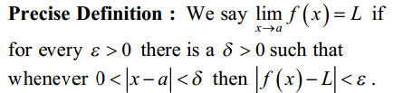通俗的讲，当自变量 x 的值无限接近于某个确定的数 a 的过程中（无论从 a 的左侧还是右侧接近），如果对应的函数值 f(x) 无限接近于某个确定的数值L，那么就说 L 是函数 f(x) 在 x 无限趋近于 a 时的极限。这个 a 可以是一个有限值，也可以是正负无穷大。
2.3 左极限与右极限¶
和函数极限的定义相同，唯一区别是左极限只考虑 x 从左侧趋近于 a，右极限只考虑 x 从右侧趋近于 a。如果函数在某处存在极限，则其充分必要条件是函数在该处的左极限与右极限各自存在且相等。
 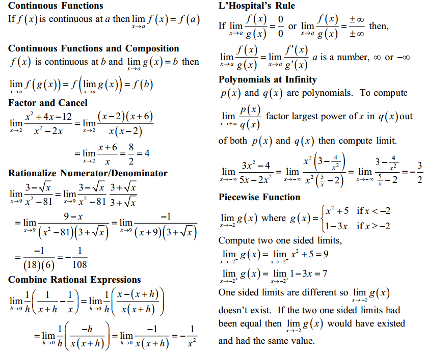
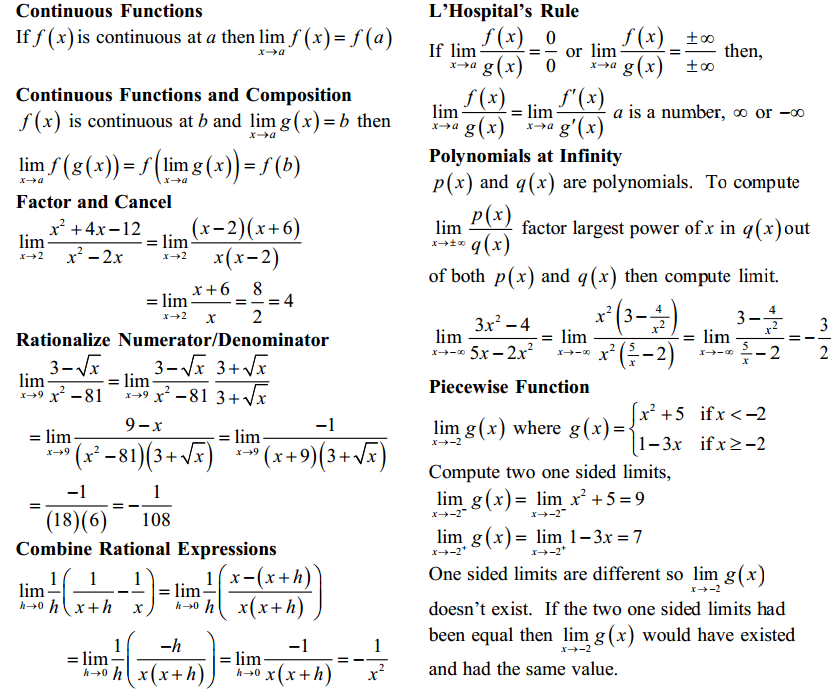
2.5 在正负无穷大处的极限¶
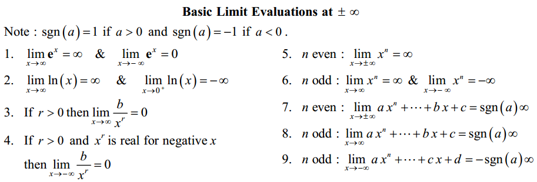2.6 函数的连续性与间断点¶
2.6.1 函数的连续性¶
设函数 f(x) 在点 x0 的某一个邻域内有定义，如果 x 趋近于 x0 时，f(x)的值趋近于 f(x0)，则称函数 f(x) 在点x0连续。或者说，当x的增量趋于0时，函数y对于的增量也趋于0，则函数在该点连续。在区间内的每一点都连续的函数，叫做该区间上的连续函数。
从几何意义理解，连续函数的图像是一条连续不间断的曲线。
基本初等函数在其定义域内都是连续的。包括：三角函数、指数函数、幂函数、对数函数等。
2.6.3 介值定理¶
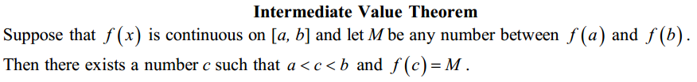通俗的讲，设函数 f(x) 在闭区间 [a,b] 上连续，且在该区间的端点各自取值 f(a)=A, f(b)=B, 那么对于 A 和 B 之间的任意一个数 M，在开区间 (a,b) 内至少有一个点 c 使得 f(c)=M 。
3. 导数¶
3.1 如何理解导数¶
导数的意义是，当一个变量（例如x）发生了微小的变化 dx 时，相应的另一个变量（例如y）的变化量 dy 与 dx 的比值，关键词是“微小的变化”。
从物理学角度而言，我们可以把 dx 看作是极短的一段时间， dy 是物体做直线运动经过的距离，导数 dy/dx 即某时间点上直线运动的瞬时变化率（距离/时间）。从几何学角度而言，导数就是曲线某点处的切线的斜率。下面我们从几何学的角度探讨下导数的由来。
几何学的定义
几何学中，斜率（slope）代表的是一条线段的陡峭程度，即给定一个特定的 x 方向上的变动，y 会如何改变？

基于上述定义，我们可以很容易的计算两点之间的斜率，但如果我们想知道曲线上某个特定点处（切线）的斜率呢？导数就能帮助我们解答这个问题。
在深入例子之前，我们先来明确一下切线的定义。圆的切线指的是与曲线只有一个交点的直线，但对于广义上曲线，这个定义并不精确，因为与一条曲线只有一个交点的直线可能有两条（考虑x轴和y轴相对于二次函数抛物线）。因此，更精确的定义如下：

下面我们来看如何求曲线上某特定点处切线的斜率。考虑下图 \(f(x) = x^2 + 3\) 的函数图像：

点 (1,4) 和点 (3,12) 之间的斜率计算很简单：
那么，如何计算特定点 (1,4) 处（切线）的斜率呢？自然我们会想到找到该点左右两边最近的两个点，计算这两点之间的斜率。导数的产生正来源于此，只不过我们可以用极限来替代找到两个点的过程。要求得已知曲线 f(x) 上某个特定点处切线的斜率，我们不妨在该曲线上任意位置（方便起见，假设在该点右侧好了）再取一个点，比如 (3,12)，当该点沿着曲线 f(x) 无限趋近于点 (1,4) 时，此时如果上式
的极限存在，则此极限就是该点处切线的斜率。
3.2 导数的计算¶
我们以函数 \(f(x) = x^2\) 为例看下导数的计算过程。计算某点切线的斜率和计算两点之间的斜率一样，只不过现在计算的是给定点和与它无限接近的另一个点之间的斜率。我们用 h 来表示这个无穷小的距离。
- 给定函数
- 对 \(x\) 增加一个无穷小的量 \(h (h = Δx)\)
- 套用斜率计算公式
- 化简
- 将 \(h\) 设为 0 (因为 \(h\) 的极限是 0)
所以我们看到，对于二次函数 \(f(x) = x^2\), 在曲线上任何位置的斜率都等于 \(2x\).
3.3 导数的定义¶
从上节的例子中，我们总结下在特定点处切线的斜率计算公式（即如下极限）
由此，可以得到函数的导数概念：
设函数 \(y=f(x)\) 在点 \(x_0\) 的某个邻域内有定义，当自变量 \(x\) 在 \(x_0\) 处取得增量 \(h\) (点 \(x+h\) 仍在该邻域内)时，相应的函数取得增量 \(f(x_0+h)-f(x_0)\) ；如果这两者之比（即上述斜率计算公式）在 \(h\) 无限趋近于 0 时的极限存在（即左极限与右极限都存在且相等），则称函数 \(y=f(x)\) 在点 \(x_0\) 处可导，并称这个极限为函数 \(y=f(x)\) 在 \(x_0\) 处的导数，记为 \(y=f'(x_0)\)。
对于函数 \(y=f(x)\), 如果它在某开区间内每点都可导，则称函数在开区间内可导，这样对于该区间内任意一个 \(x\) 都对应了一个确定的导数值，这样就构成了一个新的函数，称为原函数 \(y=f(x)\) 的导函数 \(y=f'(x)\)。导函数也有其他几个等同的写法，如下。
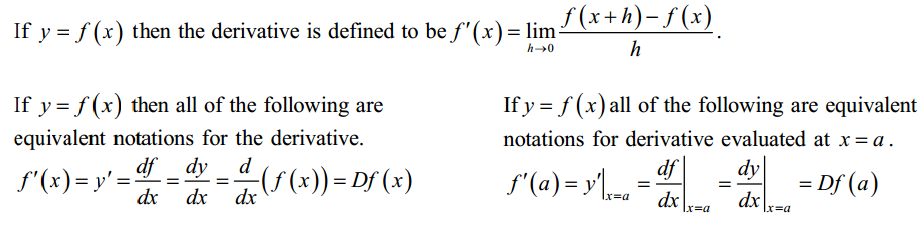从上述的例子我们可以看出，导数可以理解为曲线上某一点处切线的斜率。如果我们把曲线函数看成时间-路程的函数，那么某点处的导数也可以理解为该时间点处的瞬时速度；更精确的说，是 该时间点附近的变化率的最佳近似值 。
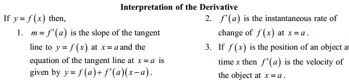
3.5 复合函数的求导法则: 链式法则 Chain Rule¶
对于两个函数组合起来的复合函数，其导数等于里层函数值代入外层函数的导数，乘以里层函数的导数。
更正式的定义： 如果 u=g(x) 在 x 处可导，而 y=f(u) 在点 u=g(x) 处可导，则复合函数 y=f[g(x)] 在点 x 处可导，其导数为 f’(g(x))*g’(x)
假设我们有一个复合函数如下：
它们各自对于的导数是：
计算该复合函数的导数：
下图是链式法则在特定函数上的应用：
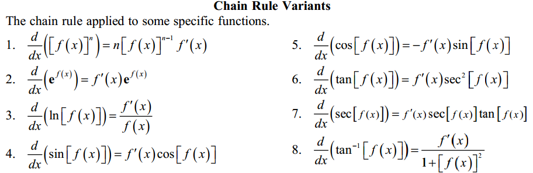3.6 高阶导数¶
f’(x) 是函数 f(x) 的一阶导数，对它再求导，即导数的导数叫做对 f(x) 的二阶导数，记作 f’‘(x)，相应的还可以有更高阶的导数。高阶导数的写法如下图：
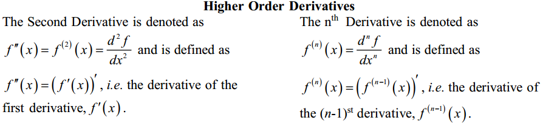从几何意义上理解，一阶导数是曲线上某点切线的斜率，二阶导数是斜率的变化率，三阶导数的变化率的变化率...以此类推，阶数越高，对该点及其附近的情况描述的越精细。

3.8 几个重要的中值定理¶
3.7.1 罗尔定理¶
定理内容：如果 R 上的函数 f(x) 满足以下条件： （1）在闭区间 [a,b] 上连续 （2）在开区间 (a,b) 内可导 （3）f(a)=f(b) 则至少存在一个 ξ∈(a,b)，使得 f’(ξ)=0
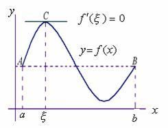几何意义：若连续曲线 y=f(x) 在区间 [a,b] 上所对应的弧段 AB，除端点外处处具有不垂直于 x 轴的切线，且在弧的两个端点 A,B 处的纵坐标相等，则在弧 AB 上至少有一点 C，使曲线在C点处的切线平行于 x 轴。
3.7.2 拉格朗日中值定理¶
拉格朗日中值定理是罗尔中值定理的推广，它反映了可导函数在闭区间上的整体的平均变化率与区间内某点的局部变化率的关系。
定理内容：如果函数 f(x) 满足： （1）在闭区间 [a,b] 上连续 （2）在开区间 (a,b) 上可导 那么在 (a,b) 内至少有一点 c，使得 (f(b)-f(a))/(b-a) = f’(c)
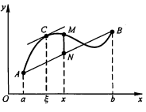几何意义：若连续曲线 y=f(x) 的弧 AB 上除了端点外处处具有不垂直于x轴的切线，那么曲线上至少有一点 C，使得曲线在 C 处的切线平行于弦 AB。
物理意义：对于直线运动，在任意一个运动过程中至少存在一个位置（或一个时刻）的瞬时速度等于这个过程中的平均速度。
3.7.3 柯西中值定理¶
定理内容：如果函数 f(x) 及 F(x) 满足：
（1）在闭区间 [a,b] 上连续 （2）在开区间 (a,b) 上可导 （3）对任一 x 属于 (a,b)，F’(x)不等于0
那么在 (a,b) 内至少有一点 ξ，使等式
成立。
3.8 微分 Differentiation¶
3.8.1 微分的定义¶
微分和导数的概念紧密相关。
导数是指函数在某点处的 瞬时变化率 （或者说该点切线的斜率），即 y 的增量与 x 的增量的比值的极限。
微分是指函数在某点处的 变化量 ，其定义是，如果函数在某点处的增量 △y 可以分解为 A△x 与 o(△x) 两部分的和（o(△x) 是关于△x的高阶无穷小），则前者（线性主部）称为在该点相对于自变量增量 △x 的微分，记为 dy，当 △x 非常小时，△y 的值可以由这个微分来近似替代，而忽略 o(△x) 部分。这个 A 就等于该点处的导数 f’(x)。在f’(x)!=0的条件下，我们可以用微分 dy = f’(x)dx 来替代真正的增量 △y。
从几何意义来看，导数的值是曲线该点处切线的斜率，而微分的值 dy 是沿着切线方向向上纵坐标的增量，△y 的值是沿着曲线方向上纵坐标的增量，当 △x 非常小时，就可以用切线上的增量代替曲线上的增量,在数学上也称为非线性函数的局部线性化（在局部用切线段近似替代曲线段）。
 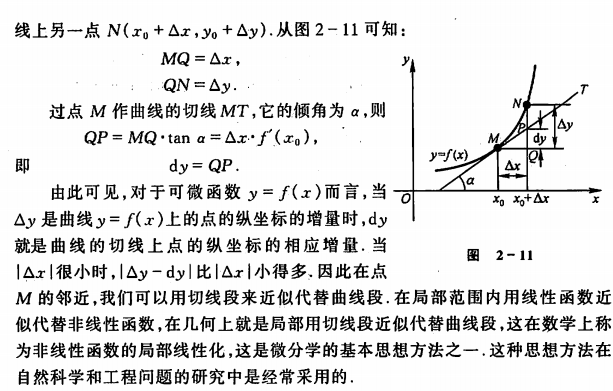
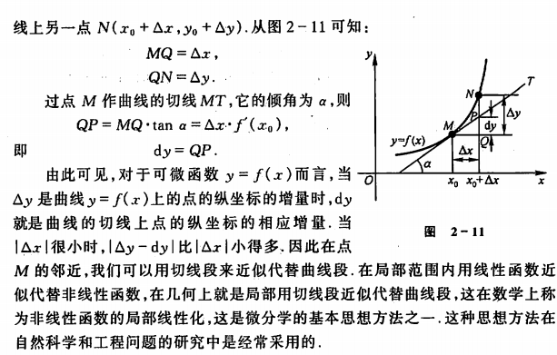
对一元函数而言, 可导必可微, 可微必可导。
3.9 积分 Integration¶
3.9.1 积分的几何意义¶
函数 f(x) 的积分就对应了函数 f(x) 图像与垂线 x=a, x=b 以及x轴围成的区域面积，如下图：

a,b 两点称作积分的极限，符号 \(\int\) 源于拉丁字母 summa（求和的意思），积分表示的就是函数 f(x) 在a,b 这两个极限下的值的总和。
积分函数 F(c) 表示的是定义了积分上限的面积计算的函数：
其中，c定义了积分的上限，0是积分下限。我们记得导函数 f’(x) 表示了函数每点处的斜率，类似的，积分函数 F(c) 表示了在任意的极限下，函数图像下方的面积。要计算任意两点 a,b 之间的图像面积，我们可以通过计算 F(c) 的变化来获得：

3.9.2 积分的计算¶
那么如何计算这份面积呢？我们可以把函数图像下方的区域分割成很多微小的矩形，将矩形面积的和累加起来。例如下图是函数 \(f(x)=x^2\) 在 \(x=1\) 与 \(x=3\) 围成的区域，我们以间距 \(h=0.5\) 将这块区域切成4个矩形：

如果将矩形切分的越细，我们就能得到越近似的估计。
要找到给定函数 f(x) 的积分函数 F(x)，实际上就是找到一个函数 F(x) ，其导数为 f(x)。 F(x) 也叫做 f(x) 的反导数。
例如，假设我们要寻找函数 \(f(x)=x^2\) 的积分函数 F(x)，就是要找到这样一个函数使得：
通过导数公式的逆向推导，我们能得到这里的 F(x)为：
根据是否给出 a,b 这两处极限，我们把积分分为定积分与不定积分，具体定义如下：

可知，定积分是一个具体的数值（函数曲线与 x=a, x=b 以及x轴围成的区域面积）,而不定积分是个函数表达式。
3.9.3 常用积分公式¶
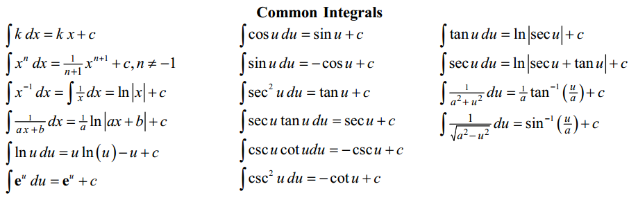
4. 导数的应用¶
4.2 函数单调性的判定方法¶
设函数 f(x) 在区间 I 上连续且可导：
- 如果在区间 I 内 f’(x)>0，则该区间内函数是单调增加的
- 如果在区间 I 内 f’(x)<0，则该区间内函数是单调减少的
- 如果在区间 I 内 f’(x)=0，则该区间内函数是个常数
4.3 曲线的凹凸性¶
- （向上）凸的曲线：在曲线上任取两点，连接这两点的弦总是位于曲线的下方（下图的曲线 ACB）
- （向上）凹的曲线：在曲线上任取两点，连接这两点的弦总是位于曲线的上方（下图的曲线 ADB）

4.4 凹凸性的判定方法¶
设函数 f(x) 在区间 I 上连续且具有一阶和二阶导数：
- 如果在区间 I 内 f’‘(x)>0，则该区间内函数是向上凹的
- 如果在区间 I 内 f’‘(x)<0，则该区间内函数是向上凸的
如何理解：以二次函数 \(f(x) = x^2\) 为例，其一阶导数等于 2x，其涵义即函数任何一点上的切线斜率，在 y轴右侧 2x的值恒 >0，因此该函数在 y轴右侧的区间内是单调增加的，同理在 y轴左侧是单调递减的；其二阶导数等于2，其涵义即函数任何一点上的切线斜率的变化率，在整个函数定义域内二阶导数恒 >0，因此每一点处的切线斜率会越来越大，函数图像向上凹。
4.5 曲线的拐点¶
如果在 x=c 处函数的凹凸性改变了，那么该点也称为函数曲线的拐点。寻找拐点的方法很简单，先求出令 f’‘(x)=0 的点或二阶导数不存在的点，观察这些点的左右两侧二阶导数的符号，如果两边符号相反，则该点是拐点。
4.6 函数极值、最大值与最小值¶
4.6.1 基本概念¶
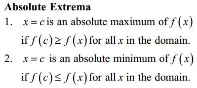极值定义：若函数 f(x) 在 x0 的一个邻域D有定义，且对D中除 x0 的所有点，都有 f(x)<f(x0) ，则称 f(x0) 是函数 f(x) 的一个极大值。同理，若对D的所有点，都有 f(x)>f(x0) ，则称 f(x0) 是函数 f(x) 的一个极小值。
对应的，函数最值的定义如下：
最小值:设函数 y=f(x) 的定义域为 I ，如果存在实数M满足：①对于任意实数 x∈ I ，都有 f(x)≥M ，②存在 x0∈I 。使得 f(x0)=M ，那么，我们称实数 M 是函数 y=f(x) 的最小值。
最大值:设函数 y=f(x) 的定义域为 I ，如果存在实数M满足：①对于任意实数 x∈I ，都有 f(x)≤M ，②存在 x0∈I 。使得 f(x0)=M ，那么，我们称实数 M 是函数 y=f(x) 的最大值。

鞍点（saddle point）：目标函数在此点上的梯度（一阶导数）值为 0， 但从该点出发的一个方向是函数的极大值点，而在另一个方向是函数的极小值点。
4.6.2 费马引理（Fermat’s Theorem）¶
函数的每一个极值都是驻点，函数的导数在该点为零，或者是不可导的点。
4.6.3 如何寻找函数极值点¶
基于费马引理，我们可以通过求驻点（或不可导点）来找到函数极值点，再结合二阶导数来区分是极大还是极小值。步骤如下：
- 求导数 f’(x)
- 求函数的所有驻点（f’(x)=0 的点）和不可导点
- 观察 f’(x) 的符号在每个驻点和不可导点的左右邻近的情形，确定是否是极值点
- 如果 f(x) 在 x0 处具有二阶导数且 f’(x0)=0, f’‘(x0)!=0，则：
- 当 f’‘(x0)<0 时，函数在该点取得极大值（因为函数在该段区间是向上凸的）
- 当 f’‘(x0)>0 时，函数在该点取得极小值（因为函数在该段区间是向上凹的）
5. 泰勒公式¶
5.1 问题由来¶
假设有人问你，如何计算 cos(2) 的值？是不是觉得很困难？
有些函数，例如 f(x) = cos(x)，进行函数值的计算很困难，那么有没有办法把这类函数替换成其他的近似函数，从而利用有限次的加减乘除的简单算术运算，便能求得其函数值？泰勒公式就是由此而来： 用一个多项式函数来近似任意的其他函数 。至于为什么是用多项式函数来近似而不是其他什么函数，是因为多项式函数在数学上非常“友好”，方便计算，方便求导，方便积分。
5.2 泰勒公式¶

泰勒公式的形式看似复杂，但只要理解了其本质，自己也能分分钟写出来。关于如何理解泰勒公式，知乎上排名第一的答案已经写的非常精彩了 https://www.zhihu.com/question/25627482 ，这里就不再详细展开，只把最核心的思想总结如下：
物理学上，如果想仿造一段曲线，那么首先应该保证曲线的起始点一样，其次保证起始点处位移随时间的变化率一样（速度相同），再次应该保证前两者相等的同时关于时间的二阶变化率一样（加速度相同）……如果随时间每一阶变化率（每一阶导数）都一样，那这两根曲线肯定是完全等价的。
泰勒公式的产生与上述思想完全一致：如果我们要模仿任意一个原函数 f(x)，我们只需要构造这样一个多项式函数 g(x)，保证这两个函数在某一点的初始值相等，1阶导数相等，2阶导数相等，……n阶导数相等，就可以做到一个很好的近似。
References
| [1] | Calculus Cheat Sheet http://tutorial.math.lamar.edu/pdf/Calculus_Cheat_Sheet_All.pdf |
| [2] | 《高等数学（第六版）》同济大学数学系 编，高等教育出版社 |
| [3] | Essense of Calculus, 3Blue1Brown |
| [4] | 麻省理工学院公开课：单变量微积分, http://open.163.com/special/sp/singlevariablecalculus.html |